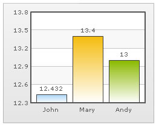
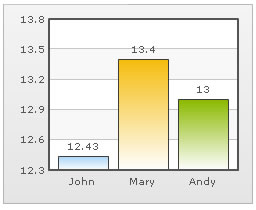
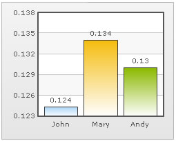
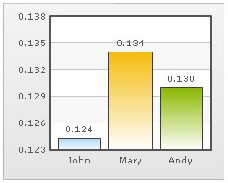
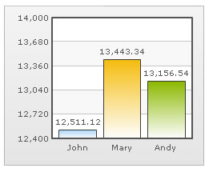
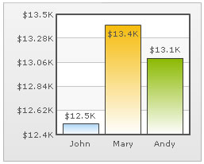
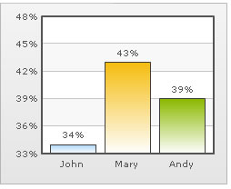

FusionCharts v3 offers a lot of options to format numbers on the chart. You can configure number prefixes & suffixes, decimal places, and scaling of numbers based on a pre-defined scale. In this section, we'll see the number formatting properties supported by FusionCharts and look into number scaling in the next section.
We'll start with setting decimal precisions for the numbers on chart.
All the charts in FusionCharts v3 support the attribute decimals. This single attribute lets you control the decimal precision of all the numbers on the chart. Using this attribute, you can globally set the number of decimal places of ALL numbers of the chart.
For example, if you have numbers on your chart as 12.432, 13.4 and 13 and you set <chart ... decimals='2' >, the numbers would be converted to 12.43, 13.4 and 13 respectively.
 |
 |
Chart without any decimal formatting applied |
With decimals set to 2 (see the first column value) |
Similarly, if you had data as 0.12352, 0.134 and 0.13, and you set decimals as 3, FusionCharts would output 0.124, 0.134 and 0.13 respectively. Note that even though we've set decimals to 3, FusionCharts now doesn't forcibly add the 0 padding to 0.13 to form 0.130, as the trailing 0 is un-necessary.
However, if you want your numbers on the chart to have trailing zeroes too, you can set <chart ... forceDecimals='1' > and now the numbers would show as 0.124, 0.134 and 0.130 respectively. Shown below are examples:
 |
 |
Trailing zeroes missing in last column's value |
Forcing trailing zeroes by setting forceDecimals='1' |
On dual y-axis charts, you've to set decimals and configuration per-axis. So, the XML/JSON would look like:
Here, sDecimals refers to the decimal places to be added to any data point plotted against secondary axis (hence the prefix s before decimals).
FusionCharts automatically formats your numbers by adding K,M (Kilo, Million) and proper commas to the numbers. Shown below is an example:

In the above image, the data for chart is 12500, 13400 and 13300. FusionCharts automatically formats the number scaling to convert to K (Thousands) & M (Millions). If you do not wish to truncate numbers in this manner, just use:
When you now view the chart, you'll get the following output:
You can see above that FusionCharts is now showing full numbers on the chart. It has also added commas to the numbers at the required places. If you do not need the commas too, set formatNumber=0. But, setting formatNumber=0 wouldn't format any decimal places too (even if explicitly specified in your data).
Shown below is an example with <chart ... formatNumber='0' formatNumberScale='0' ..> :
You can see that the commas have been removed from numbers.
Again, for dual y-axis charts, you'll have to set it explicitly for secondary axis using the XML/JSON below. While the primary axis, by default, scales numbers to K,M, the secondary axis does not. For the secondary axis to scale to K,M, you'll have to explicitly define number scaling for the axis.
Here, the prefix s represents secondary axis.
By default, FusionCharts uses . (dot) as decimal separator and , (comma) as thousand separator character. However, you can customize this character depending on your requirements.
To do so, use the decimalSeparator and thousandSeparator attribute. For example, let's set our thousands separator as dot and decimal separator as comma. To do so, you'll have to use the following data:
Shown below is the output.
 |
 |
Chart with default decimal and thousand separators. FusionCharts by default separates thousands using commas and decimals using dots. |
Chart with swapped decimal and thousands separator character |
FusionCharts allows you to add a prefix or suffix to all numbers on the chart. You can use the following attributes of <chart> element to attain the same:
- numberPrefix="$" : Using this attribute, you could add prefix to all the numbers visible on the graph (plotted on primary axis). For example, to represent all dollars figure on the chart, you could specify this attribute to ' $' to show like $40000, $50000.
- numberSuffix="p.a" : Using this attribute, you could add a suffix to all the numbers visible on the graph. For example, to represent all figure quantified as per annum on the chart, you could specify this attribute to ' /a' to show like 40000/a, 50000/a.
- sNumberPrefix="$" : Using this attribute, you could add prefix to all the numbers visible on the graph (plotted against secondary axis, in case of dual y-axis charts).
- sNumberSuffix="p.a" : Using this attribute, you could add a suffix to all the numbers visible on the graph (plotted against secondary axis, in case of dual y-axis charts).
To know more on how to use currency symbols (£, €, ¥ etc.) refer to Using Currency Symbols page. If you intended to use special punctuations or characters like &, <, >, % etc. refer to Using Special Punctuation page.
 |
 |
Number Prefix set as $ for the chart |
Number Suffix Set as % |
If you've opted to manually set the number of divisional lines on chart, you can also control the decimals of y-axis values separately. For example, consider the following data and chart:
<chart yAxisMinValue='115' yAxisMaxValue='140' adjustDiv='0' numDivLines='3' > <set label='John' value='125' /> <set label='Mary' value='134' /> <set label='Andy' value='131' /> </chart>
{
"chart":{
"yaxisminvalue":"115",
"yaxismaxvalue":"140",
"adjustdiv":"0",
"numdivlines":"3"
},
"data":[{
"label":"John",
"value":"125"
},
{
"label":"Mary",
"value":"134"
},
{
"label":"Andy",
"value":"131"
}
]
}
The chart for this XML/JSON looks as under:
In this chart, we've manually fixed the chart lower limit, upper limit and number of divisional lines. We've also asked FusionCharts not to automatically adjust divisional lines. Now, if you see the chart, you'll find that FusionCharts has truncated decimals from y-axis values, as it couldn't find any other decimal values on the chart.
You can, however, opt to just show decimals on y-axis values in this case (when adjustDiv is false) using forceYAxisValueDecimals='1' and yAxisValueDecimals='number' attribute.
Example:
<chart yAxisMinValue='115' yAxisMaxValue='140' adjustDiv='0' numDivLines='3' forceYAxisValueDecimals='1' yAxisValueDecimals='2' decimals='0' >
"chart":{
"yaxisminvalue":"115",
"yaxismaxvalue":"140",
"adjustdiv":"0",
"numdivlines":"3",
"forceyaxisvaluedecimals":"1",
"yaxisvaluedecimals":"2",
"decimals":"0"
}
When you now see the chart, you'll get 2 decimal places on y-axis values.
For charts with dual y-axis, the XML/JSON would be:
Next, we'll see how to utilize the new number scale formatting properties provided in FusionCharts v3.